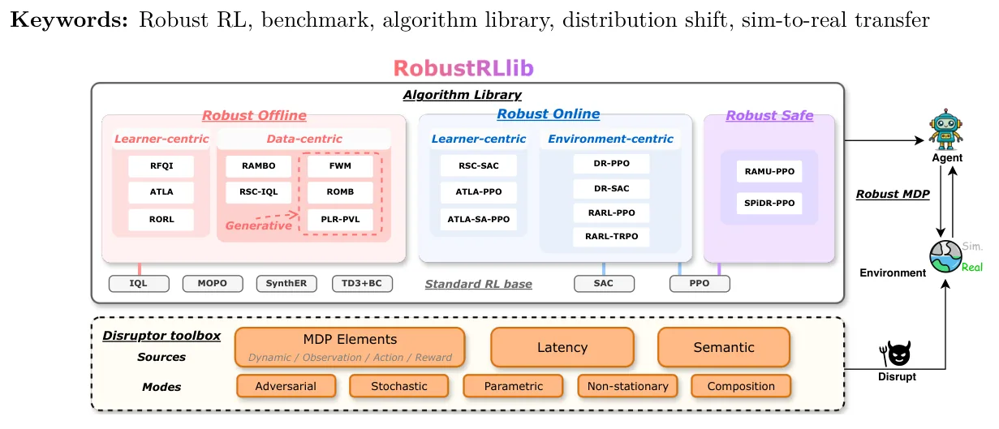
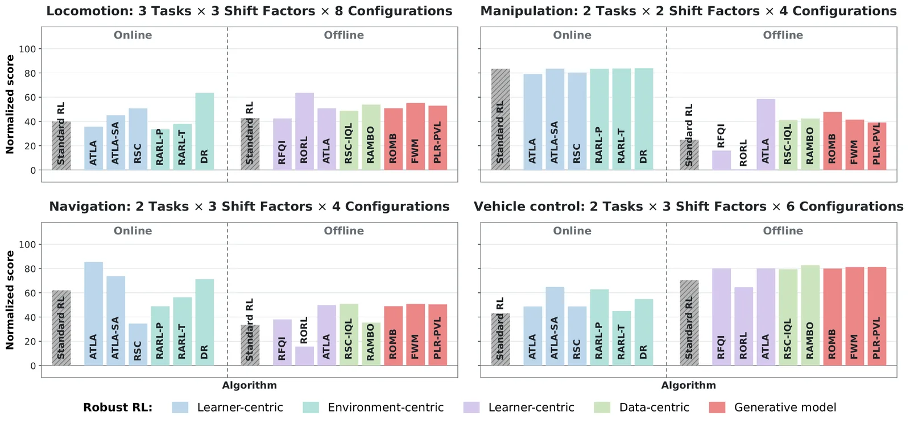
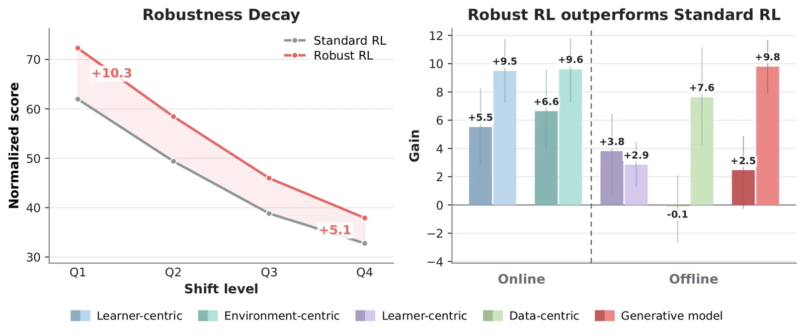
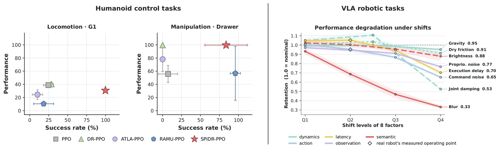

O Problema da Fragmentação no RL Robusto
O Aprendizado por Reforço (RL) avançou significativamente, mas sua implantação no mundo real ainda é limitada por preocupações com robustez e segurança. Políticas treinadas em ambientes idealizados frequentemente falham sob mudanças de distribuição ou interrupções, seja em direção autônoma, ensaios clínicos ou robótica. O RL Robusto visa desenvolver políticas que permaneçam confiáveis sob diversos tipos de perturbações, como ruído nas observações, mudanças na dinâmica do ambiente ou ataques adversariais.
No entanto, existem duas barreiras fundamentais para o potencial mais amplo dessa área: a reutilização limitada dos algoritmos e a falta de uma caracterização empírica clara dos limites de capacidade. Os algoritmos existentes estão fragmentados em implementações separadas, sem uma biblioteca unificada que permita aos praticantes experimentar e comparar amplamente diferentes métodos em novas aplicações.
Além disso, não há um benchmark abrangente que defina onde os métodos atuais são eficazes e onde persistem lacunas substanciais de robustez. Para preencher essa lacuna, os autores introduzem o RobustRLlib, uma biblioteca centrada em algoritmos e um benchmark que unifica 17 algoritmos representativos de RL online, offline e seguro, juntamente com uma plataforma de avaliação aprimorada.

Arquitetura do RobustRLlib
O RobustRLlib é construído em torno de uma interface unificada que padroniza a interação entre os algoritmos e o ambiente. Isso permite que os usuários troquem facilmente entre diferentes métodos robustos sem reescrever código de treinamento ou coleta de dados. A biblioteca é dividida em três famílias principais: RL Robusto Online, RL Robusto Offline e RL Seguro Robusto. Cada família contém algoritmos que abordam a robustez de maneiras estruturalmente distintas.
Para avaliar a robustez, a biblioteca inclui uma toolbox expandível de disruptores. Esses disruptores simulam mudanças no ambiente, como perturbações nas observações, ações ou dinâmica do sistema. Os autores testaram 273 configurações de perturbação, cobrindo desde desvios simples até cenários complexos de sim-para-real. Essa abordagem sistemática permite criar um mapa de capacidades atualizado dos algoritmos atuais.
A estrutura permite não apenas a comparação, mas também a extensão. Desenvolvedores podem adicionar novos algoritmos ou disruptores ao framework existente, facilitando a pesquisa reprodutível e a aplicação de métodos existentes a novos problemas. A biblioteca é open-source e projetada para ser amigável ao usuário, reduzindo a barreira de entrada para a implementação de técnicas avançadas de robustez.
Algoritmos Offline: Learner-Centric e Data-Centric
Os algoritmos offline aprendem a partir de conjuntos de dados fixos de transições, sem interação contínua com o ambiente. O RobustRLlib categoriza esses métodos em duas subfamílias: learner-centric (centrados no aprendizado) e data-centric (centrados nos dados). Os métodos learner-centric modificam o objetivo ou a atualização do valor para tornar o aprendizado menos sensível a transições incertas ou observações perturbadas.
Um exemplo é o RFQI (Robust Fitted-Q Iteration), que substitui o alvo padrão de Bellman por uma atualização de pior caso sobre a ambiguidade das transições. O RORL combina bootstrap pessimista com suavização ao redor dos estados para estabilizar previsões sob perturbações de observação. Já o ATLA treina um adversário de observação junto com o algoritmo base, expondo as atualizações da política a entradas adversas.
Os métodos data-centric, por outro lado, expandem as experiências disponíveis para o aprendiz base, reescrevendo ou gerando contrafactuais. O RSC (Robust Self-Correction) reescreve amostras usando uma máscara causal inferida para enfraquecer correlações espúrias semânticas. O RAMBO (Robust Adversarial Model-Based Optimization) faz ramificações de rollouts sintéticos a partir de estados do conjunto de dados e ajusta seu modelo de dinâmica adversarialmente, mantendo uma restrição de ajuste de dados.
Modelos Generativos e RL Online
Dentro dos métodos data-centric, existe uma subfamília que utiliza modelos generativos. Esses métodos aprendem modelos condicionais da dinâmica das transições e usam estados futuros gerados ou trajetórias multi-etapa para melhorar a robustez sob mudanças de dinâmica. O ROMB (Robust Model-Based Optimization) otimiza contra transições adversas representadas por um ensemble de modelos aprendidos. O FWM (Flow-World Model) usa correspondência de fluxo para substituir modelos de mundo baseados em difusão, amostrando trajetórias futuras para construir alvos de critic multi-etapa.
O RL Robusto Online preserva a interação contínua com o ambiente, mas difere em onde a robustez entra no treinamento. Os métodos learner-centric online modificam a entrada da política e o objetivo de aprendizado. Por exemplo, adaptações do ATLA para online treinam um adversário de observação junto com o algoritmo PPO ou SAC. Já os métodos environment-centric, como o RARL e o DR, focam na robustez do ambiente, randomizando a dinâmica ou treinando adversários contra a política durante o rollout.
Os autores também incluem métodos de RL Seguro Robusto, como o RAMU e o SPiDR, que incorporam restrições de segurança diretamente no processo de aprendizado. Esses métodos são cruciais para aplicações de alto risco, onde a política deve operar dentro de limites de custo ou evitar estados perigosos, mesmo sob perturbações. A tabela 1 do paper detalha as características estruturais de cada método, indicando se eles usam modelos adversariais, modelos de transição aprendidos ou rollouts em ambientes perturbados.

Avaliação Sistemática e Resultados
A avaliação do RobustRLlib abrange tarefas de locomoção e manipulação, testando 20 algoritmos robustos contra bases de RL padrão. Os resultados mostram que os algoritmos robustos mantêm desempenho superior ao RL padrão sob níveis crescentes de perturbação. O gráfico de barras na Figura 3 ilustra essa diferença, onde cada barra colorida representa um método robusto, agrupado por característica e configuração online/offline.
Os autores analisam o ganho de robustez em diferentes níveis de desvio do ambiente, classificados de Q1 a Q4. As curvas de decaimento na Figura 4 demonstram que, enquanto o RL padrão sofre uma queda acentuada na performance com o aumento da perturbação, os algoritmos robustos mantêm uma performance mais estável. O ganho médio sobre os algoritmos base é significativo, especialmente em cenários de alta perturbação.
É importante notar que nem todos os algoritmos se saem bem em todos os cenários. A avaliação revela que a eficácia depende fortemente do tipo de perturbação. Por exemplo, métodos focados em adversários de observação podem não ser tão eficazes contra mudanças na dinâmica do ambiente. Isso destaca a necessidade de escolher o algoritmo certo para o tipo específico de risco esperado na aplicação real.
Extensão para Tarefas Avançadas
Para validar a utilidade do benchmark em cenários mais complexos, os autores estendem a avaliação para tarefas de robótica humana e visão-linguagem-ação (VLA). Essas tarefas exigem que a política lide com espaços de ação de alta dimensionalidade e percepção multimodal, tornando-as mais desafiadoras do que as tarefas padrão de controle.
Na Figura 8, vemos a avaliação no Isaac Lab e em tarefas VLA. Os pontos representam o desempenho da tarefa contra a taxa de sucesso em duas tarefas específicas: sobrevivência sob atraso de ação e manipulação de gavetas com restrições de custo. Os resultados mostram que os algoritmos robustos do RobustRLlib são capazes de lidar com esses cenários complexos, mantendo a estabilidade e a segurança.
Essa extensão prova que o framework não é apenas um exercício teórico, mas uma ferramenta prática para desenvolver políticas que funcionam em ambientes dinâmicos e imprevisíveis. A capacidade de aplicar os mesmos algoritmos a tarefas tão diversas, desde locomoção até manipulação visual, destaca a flexibilidade e a robustez da interface unificada proposta.

Análise de Ganhos e Capacidade
Os autores realizam uma análise detalhada dos ganhos dos métodos robustos. Eles comparam métodos baseados em política (on-policy) e fora de política (off-policy), descobrindo que os métodos off-policy, como IQL e SAC, tendem a ter mais estabilidade sob perturbações devido à sua capacidade de aprender a partir de dados históricos mais diversificados. No entanto, os métodos on-policy, como PPO, podem ser mais rápidos em convergir em ambientes estáveis, mas são mais sensíveis a mudanças abruptas.
A análise também revela que a combinação de técnicas adversariais com modelos de mundo pode oferecer ganhos adicionais de robustez. Métodos que usam modelos generativos, como FWM e PLR-PVL, mostram-se particularmente eficazes em cenários onde a dinâmica do ambiente muda significativamente. Isso sugere que a incorporação de modelos de mundo precisos é um caminho promissor para o futuro do RL Robusto.
Os autores também discutem a importância da calibração de hiperparâmetros. Diferentes algoritmos exigem ajustes específicos para lidar com tipos distintos de perturbação. O RobustRLlib fornece configurações padrão, mas os usuários devem estar cientes de que a otimização fina pode ser necessária para alcançar o melhor desempenho em tarefas específicas.

Conclusão e Perspectivas
O RobustRLlib representa um passo significativo em direção à padronização e avaliação do RL Robusto. Ao unificar 17 algoritmos em uma biblioteca coesa e fornecer um benchmark abrangente, os autores facilitam a pesquisa comparativa e a aplicação prática de métodos robustos. A ferramenta open-source permite que a comunidade continue a expandir o estado da arte, adicionando novos algoritmos e cenários de teste.
Apesar dos avanços, ainda há muito a ser explorado. A generalização para cenários do mundo real, a eficiência computacional e a interpretabilidade dos algoritmos robustos são áreas que requerem atenção contínua. O RobustRLlib serve como uma base sólida para essas futuras investigações, oferecendo um ponto de partida confiável para pesquisadores e engenheiros que buscam implantar RL em ambientes críticos.
Em resumo, o paper não vende o RL Robusto como uma solução mágica, mas como um campo em evolução que precisa de ferramentas padronizadas para progredir. O RobustRLlib é uma dessas ferramentas, oferecendo transparência, reprodutibilidade e uma avaliação honesta das capacidades atuais dos algoritmos.
O que fica
- RobustRLlib integra 17 algoritmos online, offline e seguros em uma interface unificada, resolvendo o problema de fragmentação de código.
- O benchmark avalia 273 configurações de perturbação, mapeando onde os algoritmos falham e onde mantêm robustez.
- Algoritmos centrados no aprendizado (learner-centric) e nos dados (data-centric) têm estratégias distintas para lidar com ruídos e desvios.
- Testes em robótica humana e visão-linguagem-ação (VLA) validam a eficácia em cenários complexos e realistas.
Paper original: RobustRLlib: A Unified Library and Benchmark for Robust Reinforcement Learning Algorithms
Comentários
Nenhum comentário ainda. Seja o primeiro.